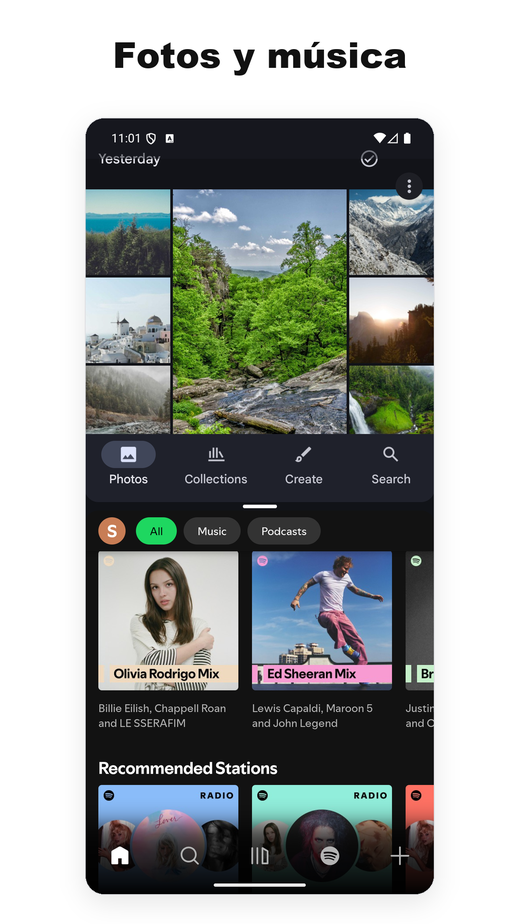
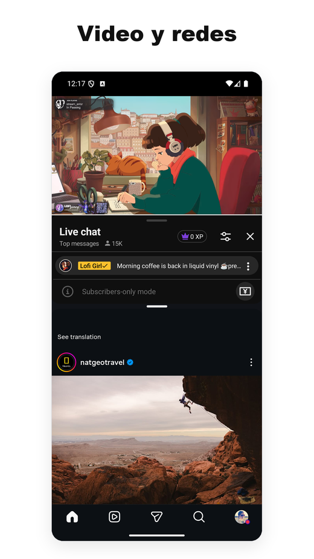
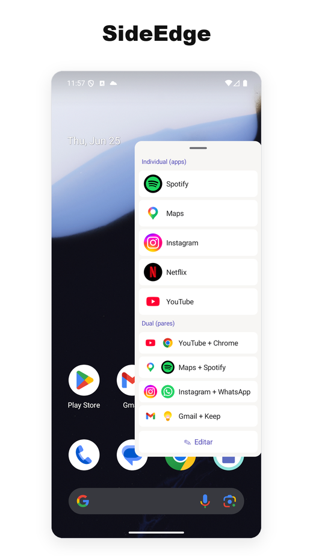
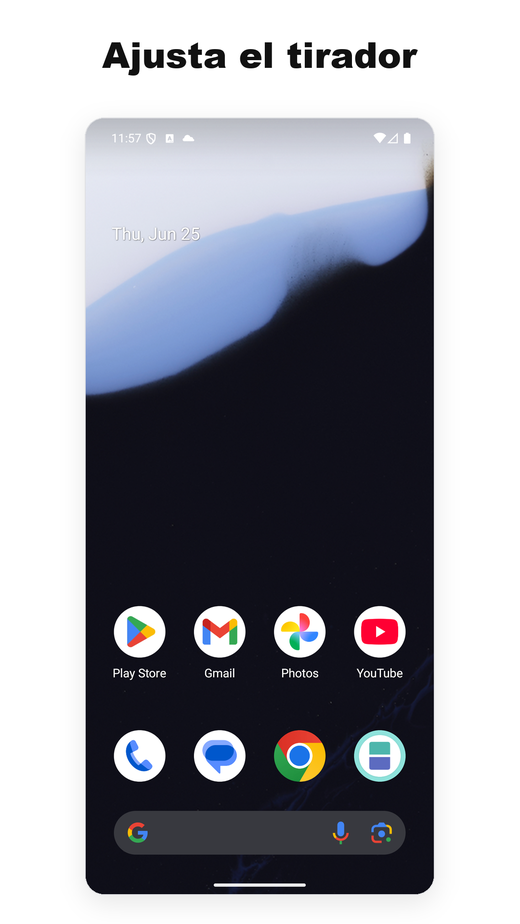

- Una de las pocas utilidades de pantalla dividida para Android que sigue funcionando de forma fiable en Android 15, 16 y 17.
- La mayoría de la competencia dejó de funcionar cuando Google modificó las APIs subyacentes; nosotros seguimos publicando actualizaciones en cada transición reciente del SO.
- Sin anuncios, sin acceso a internet. El núcleo de pantalla dividida no necesita Servicio de Accesibilidad en Android 12L+; la barra lateral opcional SideEdge usa uno solo para ocultar su tirador en las pantallas de inicio de sesión y de contraseña. Ligero, sin servicios en segundo plano.
- El plan gratuito cubre el uso básico. La suscripción Pro cuesta alrededor de 1 USD al mes, aproximadamente una décima parte que el competidor de pago más cercano.
- En los teléfonos, el App Pair nativo es básicamente exclusivo de Samsung — Android 15 lo incorporó a nivel del SO, pero solo para dispositivos de pantalla grande, dejando fuera a los teléfonos Pixel (y a todos los demás teléfonos no-Samsung).
- Si usas un Pixel y echas de menos el App Pair del Galaxy, es el reemplazo más parecido que hemos visto.
- Contexto: por qué importa el "App Pair" en Android
- Qué hace realmente Split Screen Launcher
- SideEdge — abre tus pares desde cualquier pantalla
- Una alternativa al App Pair de Samsung para Pixel
- El problema de Android 15/16 y por qué cayó la competencia
- Permisos y privacidad
- Comparativa con otras apps de pantalla dividida
- Precio
- Para quién es esta app (y quién debería omitirla)
- Resumen
1. Contexto: por qué importa el "App Pair" en Android
Android admite la multitarea en pantalla dividida desde la versión 7.0 (Nougat, 2016). Lo que nunca ha ofrecido a nivel del SO es guardar combinaciones de dos apps y abrirlas juntas. Samsung lo añadió a One UI como "App Pair" en 2017, y quien cambia de un Galaxy a un Pixel se da cuenta casi de inmediato de que ya no está.
La solución pasa por instalar un lanzador de terceros que automatice los dos pasos: abrir la app A y luego la B en la ventana adyacente. Google Play tiene decenas de estas apps, pero el ecosistema es más confuso de lo que parece: cada versión de Android cambia la forma de invocar la pantalla dividida, y la mayoría no se actualizan.
Android 15 (2024) finalmente incorporó una función "App Pair" nativa a nivel del SO — pero Google la limitó a dispositivos de pantalla grande. La Pixel Tablet la tiene; el Pixel 9 Pro, no. A mediados de 2026, así está el panorama en los teléfonos:
- Teléfonos Samsung Galaxy — App Pair nativo desde 2017 (a través del Edge Panel)
- Teléfonos Pixel (modelos normales, no Tablet ni Fold) — no lo tienen
- Xiaomi, OnePlus, Oppo, Realme, Vivo, Motorola, Nokia, Sony, ASUS — no lo tienen
Así que, en los teléfonos, el App Pair nativo es en la práctica una función exclusiva de Samsung. El resto o bien usa la pantalla dividida manual de Android (abrir la app, mantener pulsado el botón de recientes, arrastrar, repetir) o instala un lanzador de terceros como este.
Una alternativa al App Pair de Samsung para Pixel y Android puro
Si has pasado de un Galaxy a un Pixel — o a cualquier teléfono con Android puro — y buscas una alternativa al App Pair de Samsung, este es el hueco que construimos Split Screen Launcher para cubrir. Obtienes el mismo comportamiento de "abrir ambas apps lado a lado con un solo toque", sin necesidad de un dispositivo Samsung ni del Edge Panel.
También es una de las pocas opciones que sigue siendo una app de pantalla dividida que funciona en Android 15, 16 y 17 — sin anuncios, sin SDKs de seguimiento y sin permiso de Accesibilidad para el núcleo de pantalla dividida en Android 12L y posteriores (la barra lateral opcional SideEdge es la única excepción). La mayoría de las herramientas de pares de apps más antiguas dependen de atajos del sistema que las últimas versiones de Android han cerrado; esta llega a la pantalla dividida por una vía que hemos mantenido funcionando en cada actualización del SO.
2. Qué hace realmente Split Screen Launcher
Split Screen Launcher es una utilidad con un único propósito. Eliges dos apps, le pones nombre al par ("Trayecto", "Trabajo", "YouTube + Instagram") y el par aparece como una fila dentro de la app. Al tocarlo se abren las dos apps una al lado de la otra.


Ese es prácticamente todo el conjunto de funciones. Sin navegador integrado, sin widgets flotantes, sin integración en la barra de notificaciones. La app es ligera — unos pocos megabytes — y no ejecuta nada en segundo plano.
Algunos pares que usamos durante las pruebas:
- Google Maps + Spotify — al volante
- YouTube + Instagram — segunda pantalla
- Chrome + Google Keep — investigar tomando notas
- Gmail + Slack — gestión del día a día laboral
- Calculadora + Chrome — comparar precios entre pestañas
Un caso de uso que no anticipamos: el coche. Un usuario nos contó que usa Split Screen Launcher en la caja de IA con Android de su vehículo, emparejando Maps + Spotify para la navegación con música — y cambiando a Maps + Netflix para quien va en el asiento del copiloto. Como abrir un par es un solo toque, encaja en un sistema de infoentretenimiento mucho mejor que tener que mantener pulsado el menú de recientes.
Otro caso de uso que no teníamos previsto llegó desde un rincón completamente distinto: una moto. Un motorista que usaba la app en una tableta montada en el manillar quería que su automatización en MacroDroid abriera un par guardado por sí sola — un macro disparado por el encendido del motor que abre la pantalla dividida sin tocar nada mientras conduce. Esa petición se convirtió en una función. A partir de la versión 3.0.4, MacroDroid puede lanzar un par guardado a través del selector de accesos directos estándar de Android, de modo que el macro dispara la división igual que dispara cualquier otra acción. No hemos probado individualmente otras herramientas de automatización como Tasker o Automate, pero como esta función se apoya en ese selector estándar de Android y no en nada propio de la app, deberían funcionar del mismo modo. Es una función Pro, estrictamente limitada a lanzar tus pares guardados. Si no usas herramientas de automatización esto no te afecta — pero para el sector de usuarios que trabaja con las manos libres y en movimiento, cubre el hueco entre "un toque" y "cero toques".
Para quien tenga curiosidad, aquí está la configuración en MacroDroid:
- En tu macro, añade una Action → Applications → Launch Shortcut.
- En la lista "Select Shortcut", elige Split Screen.
- Selecciona el par guardado concreto que quieres activar.
- Asígnalo al disparador que prefieras — la conexión de un dispositivo Bluetooth, la conexión del cargador o una hora del día.
Eso es todo. Cuando el macro se dispara, tu par se abre en pantalla dividida, sin tocar nada. (Nuestro motorista lo vincula al encendido de la moto; el tuyo podría funcionar igual con la conexión Bluetooth del coche.)
Un detalle fácil de pasar por alto y que conviene destacar: los datos de los pares se pueden exportar a un archivo de copia de seguridad. Parece trivial, pero varias apps competidoras guardan sus pares en almacenamiento privado sin forma de exportarlos, lo que obliga a reconstruirlos a mano al cambiar de móvil. Hicimos que la copia de seguridad/restauración fuera una función de primera categoría justamente para que, al pasar de un Pixel a otro, todos los pares se restauren en segundos.
Otra decisión de diseño que conviene dejar clara: por defecto, los pares viven dentro de la app: no se crean iconos en la pantalla de inicio. La razón es en parte por sencillez (la pantalla de inicio no se llena de iconos de pares) y en parte arquitectónica: la app no queda atada a lanzadores concretos (Pixel, Nova, etc.). Como comentamos en la sección 3, los lanzadores que dependen de accesos directos son precisamente los que tienden a romperse en los saltos a Android 15 y 16; mantener todo dentro de la app hace que la migración de un teléfono a otro sea más fluida.
Una acción opcional para fijar pares en la pantalla de inicio permite a los usuarios Pro abrir un par con un solo toque directamente desde el escritorio. Queríamos mantener intacta la postura original de "pantalla de inicio simple" sin dejar de responder a la necesidad de "quiero lanzar la pantalla dividida desde un icono del escritorio". El icono que aparece en el escritorio apila los dos iconos de las apps en vertical, de modo que el par se distingue visualmente de los iconos normales del lanzador.
SideEdge — abre tus pares desde cualquier pantalla
La versión 3.0 añade SideEdge: una barra lateral desplegable que deslizas desde el borde de la pantalla. Muestra tus pares guardados y tus apps sueltas, así que puedes lanzar una división — o saltar directamente a una sola app — desde cualquier pantalla, sin tener que volver antes a la pantalla de inicio.
Si vienes de un teléfono Galaxy, esta es la parte que te resultará familiar. El Edge Panel de Samsung es la forma en que mucha gente lanzaba los App Pairs en One UI — una pestaña en el lateral de la pantalla que despliega una bandeja de accesos directos. SideEdge es nuestra interpretación de esa idea, llevada a cualquier teléfono o tableta Android. No es un reemplazo completo de la versión de Samsung, pero te ofrece una experiencia parecida — y, como el resto de la app, no tiene anuncios. Si llevabas tiempo buscando una alternativa al Edge Panel en Pixel o en Android puro, esta es una de las opciones más cercanas que hemos encontrado.


Un tirador flotante situado sobre una pantalla de inicio de sesión o de contraseña te impediría escribir en ella. Por eso SideEdge usa un Servicio de Accesibilidad para una única tarea concreta — reconocer esas pantallas de seguridad y apartar el tirador para que puedas escribir, y volver a traerlo cuando hayas terminado. Nunca lee, recopila ni transmite el contenido de la pantalla. Tienes todos los detalles más abajo, en Permisos y privacidad.
Para quién es esta app (y quién debería omitirla)
Antes de entrar en la parte técnica, aquí tienes una comprobación rápida para decidir si merece la pena seguir leyendo.
Te encaja si…
- Usas con frecuencia las mismas dos apps a la vez (mapas + música, correo + chat)
- Estás en un Pixel o Android puro y echas de menos el App Pair de Samsung
- Prefieres apps sin anuncios ni SDK de seguimiento
- Tienes Android 12L o posterior (sin permiso de Accesibilidad para el núcleo de pantalla dividida; solo SideEdge usa uno)
- Quieres algo que siga funcionando cuando sube la versión del SO
Sáltatela si…
- Casi nunca usas la pantalla dividida
- Quieres un widget flotante, lanzamiento por gestos o automatización avanzada (más allá de lanzar un par guardado)
- Tienes un Samsung: el App Pair nativo de One UI ya es excelente
- Usas una capa de personalización muy modificada (MIUI/HyperOS, OxygenOS, ColorOS, MagicOS, EMUI/HarmonyOS) — esos fabricantes alteran la funcionalidad interna de pantalla dividida, así que en esos casos el comportamiento depende del dispositivo
¿Sigues interesado? El resto del artículo cubre la parte técnica: por qué Android 15 y 16 rompieron la mayoría de alternativas y las decisiones de diseño detrás de nuestro enfoque.
3. El problema de Android 15/16 y por qué cayó la competencia
Esta es la parte interesante, y el motivo por el que la mayoría de apps rivales han dejado de funcionar.
Históricamente, los lanzadores de pantalla dividida se han apoyado en un puñado de APIs de SO que Google ha ido recortando o eliminando. Cada nueva versión de Android ha ido cerrando vías para que las apps de terceros puedan abrir dos apps a la vez. Android 15 y 16, en particular, han clausurado las rutas más comunes. Los atajos a nivel de shell fallan de forma parecida.
En pocas palabras: los "trucos" que las apps de terceros usaban para poner el teléfono en modo dividido ya no funcionan en Android 15 y 16. La mayoría de apps de esta categoría no ha publicado ningún parche.
Split Screen Launcher llega a la pantalla dividida de forma fiable en Android 15, 16 y el nuevo Android 17 por una vía distinta. Nos guardamos el mecanismo exacto: encontrar una combinación que funcione en varias versiones del SO nos costó mucha experimentación, y publicar la receta sería, en la práctica, regalársela a toda la competencia que está rota. Lo que sí podemos decir es que nuestro historial de versiones refleja un mantenimiento activo a lo largo de las transiciones de Android 12, 12L, 14, 15, 16 y 17, y pensamos mantener ese ritmo.
android:resizeableActivity="false" en su manifiesto — la cámara de serie y Google Files son los ejemplos más habituales — y, en lugar de formar un par, simplemente se abren a pantalla completa por sí solas (el App Pair integrado de Samsung se comporta igual).
(Solución alternativa) Activando a la vez
Ajustes → Sistema → Opciones de desarrollador → Forzar que las actividades sean redimensionables y Permitir apps no redimensionables en multiventana, esas apps también funcionarán en pantalla dividida. La pantalla de Ayuda dentro de la app ("Cómo usar las apps marcadas como 'Puede no funcionar'") tiene los pasos detallados.
(Novedad) Las versiones recientes también gestionan varias apps que antes se resistían a emparejarse — Alexa y Google Calendar entre ellas — de modo que ahora se abren correctamente en pantalla dividida.
4. Permisos y privacidad
En Android 12L y posteriores, abrir un par no requiere permisos en tiempo de ejecución ni Servicio de Accesibilidad: el flujo principal de pantalla dividida se basa en flags estándar de Activity. La única función que sí usa un Servicio de Accesibilidad es SideEdge: si activas la barra lateral, el servicio se emplea con un único fin concreto — reconocer las pantallas de inicio de sesión y de contraseña y apartar el tirador flotante para que nunca tape un aviso de seguridad, y volver a traerlo cuando hayas terminado. Nunca lee, recopila ni transmite el contenido de la pantalla.
La única excepción opcional es la rotación automática por par. Si la activas para un par, la app solicita el permiso especial WRITE_SETTINGS a través del cuadro de diálogo de los Ajustes del sistema en ese momento — nunca se pide por adelantado, y no lo verás a menos que uses esa función.
En Android 9 a 12 la app sí necesita permiso de Servicio de Accesibilidad porque es la única API disponible. La ficha de Play Store deja claro que dicho servicio solo se usa para activar el modo de pantalla dividida. La lista de permisos que muestra Google Play es tan corta que cabe entera en una sola pantalla: sin ubicación, sin contactos, sin almacenamiento y (sobre todo) sin red. Algo ya poco habitual en este rincón de Play Store.
En pocas palabras: en las versiones antiguas de Android no había API oficial para activar la pantalla dividida, así que el Servicio de Accesibilidad era la única vía viable. Es una restricción heredada, no algo que la app use para leer tu pantalla.
Para comparar: la mayoría de apps gratuitas de pantalla dividida en Play Store incluyen SDKs de anuncios (AdMob, Unity, IronSource), lo que implica declarar el permiso INTERNET y arrastrar los trackers que vienen con ellos. Nosotros elegimos monetizar con una suscripción mínima, en parte para mantener limpia la huella de permisos y en parte porque meter SDKs de anuncios en una utilidad tan pequeña dispararía su tamaño.
5. Comparativa con otras apps de pantalla dividida
Antes de la tabla en sí conviene dibujar el panorama. La función tipo "App Pair" se ha abordado desde varios ángulos:
- Implementaciones específicas de fabricantes — el App Pair de Samsung (desde One UI, 2017), más variantes en Xiaomi, OPPO y los antiguos LG. Solo funcionan en los dispositivos de cada marca.
- Utilidades de terceros — apps independientes dedicadas a este único caso de uso. La mayoría se apoya en APIs de SO que se han restringido o eliminado en las últimas versiones de Android, por lo que el catálogo se ha adelgazado bastante.
- Enfoques basados en automatización — Tasker y similares permiten scriptar el lanzamiento dividido, pero dependen de las mismas primitivas que las apps dedicadas, así que heredan las mismas roturas. Además, el usuario tiene que construir cada par a mano. A partir de la versión 3.0.4 hemos añadido una forma sencilla de conectar con estas herramientas: puedes lanzar un par guardado desde MacroDroid (Pro) sin tener que programar la división tú mismo. Como usa el selector de accesos directos estándar de Android, también debería funcionar con otras apps de automatización como Tasker o Automate, aunque no las hemos probado de extremo a extremo.
El propio panorama de terceros está fragmentado. Google Play muestra decenas de utilidades dedicadas a la pantalla dividida, pero la actividad y la calidad están repartidas de forma muy desigual.
Las apps más descargadas de este nicho acumulan millones de instalaciones, pero los líderes del sector son sorprendentemente deficientes: la mayor de ellas combina ese gran alcance con una puntuación de reseñas mediocre, y otra alternativa muy instalada se actualizó por última vez a mediados de 2025 y todavía no ha publicado ningún parche para los cambios de la API de pantalla dividida de Android 15/16. Varias más aplican precios agresivos, con elevadas suscripciones semanales que han sido muy criticadas en las comunidades de usuarios.
Los patrones comunes en este campo: la mayoría de apps o bien dejaron de actualizarse hacia Android 11 o 12, o vienen con banners y anuncios intersticiales intrusivos, o exigen el permiso de Servicio de Accesibilidad en todas las versiones de Android (aquí el núcleo de pantalla dividida prescinde de ese requisito en Android 12L+; solo la barra lateral opcional SideEdge lo usa). Eso deja el sector inusualmente escaso en opciones bien mantenidas y con pocos permisos.
Una app pequeña, mantenida activamente y sin anuncios como esta lo tiene fácil para destacar — siempre que los usuarios la encuentren.
6. Precio
La versión gratuita limita el número de pares guardados para que el usuario pruebe todo el flujo antes de decidir si encaja con sus hábitos. La funcionalidad básica — crear pares, lanzarlos, copia de seguridad/restauración — funciona sin pagar.
La suscripción Pro cuesta alrededor de 1 USD al mes según la región, elimina el límite de pares y añade organización por carpetas y personalización del color de los iconos. Es una suscripción estándar de Google Play, cancelable en cualquier momento.
Como referencia: otras utilidades de pantalla dividida de pago en la misma categoría tienen planes premium que van desde un pago único de unos pocos dólares hasta elevadas suscripciones semanales. A 1 USD al mes estamos aproximadamente un orden de magnitud por debajo del competidor de pago más cercano.
7. Resumen — para quién es
¿Para quién es esta app? Opinión sincera
No creemos que esta app sea para todo el mundo. Si no tienes ya un hábito fijo con dos apps (mapas + música, correo + chat, etc.), probablemente no la abrirás mucho. Pero si usas Android puro y echas de menos el App Pair del Galaxy desde que te pasaste al Pixel, esta app la hicimos para ti, y hemos intentado que sea la forma menos comprometida de recuperar ese comportamiento. La política sin anuncios y el precio de 1 USD/mes son decisiones deliberadas, y creemos que son las adecuadas para esta categoría.
A favor
- Realmente funciona en Android 15, 16 y 17
- Sin anuncios en ningún plan
- Ligero, sin servicios en segundo plano
- Sin permiso de Accesibilidad para el núcleo de pantalla dividida en Android 12L+ (solo SideEdge, opcional, usa uno)
- No declara permiso de red en absoluto
- Plan Pro a ~1 USD/mes, 10× más barato que la competencia
- Copia de seguridad / restauración para migrar de dispositivo
- Rotación de pantalla opcional por par (p. ej. forzar el modo horizontal en un par de vídeo)
- Traducida a 15 idiomas
En contra
- Hay un retardo visible de ~1 segundo entre el toque y la aparición de la pantalla dividida. Es casi todo coste del SO: entrar en modo dividido en Android 12L+ requiere varias transiciones de tareas que el sistema encadena internamente, así que cualquier app de esta categoría se mueve en el rango de 0,8–1,2 s. No es un bug, pero conviene avisar
- Sin widget flotante, sin asignación de gestos. El lanzamiento desde apps de automatización (MacroDroid) está soportado, pero es Pro y limitado a disparar un par guardado. Los accesos directos en la pantalla de inicio también son opcionales (Pro), pero todo lo demás sigue dentro de la app
- La lista de creación de pares muestra todas las apps instaladas sin categorías, lo que se hace pesado al pasar de unas 60 apps en el dispositivo
- Desarrollador único, así que si te topas con un caso raro en una ROM no Pixel no esperes parches el mismo día